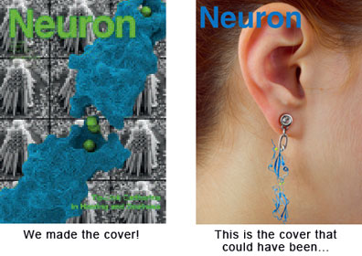

News Archives : 2010 : Molecular Mechanics of Hearing and Deafness
by David Corey, Rachelle Gaudet and Marcos Sotomayor
April 15, 2010
Cadherin-23 stretching simulations. A close-up view of the linker region between cadherin-23 repeats 1 and 2 is shown during a molecular dynamics simulation in which the protein is stretched from both ends. The simulations mimic in vivo conditions in which tip-link cadherins are stretched during sound mechanotransduction at hair cells of the inner ear. Calcium ions (shown as green spheres) were found to be essential for the mechanical stability of the protein (shown in cartoon and sticks). [click image to view movie]
Our senses are essential for survival and for the exploration of natural environments, and much has been learned about the molecular basis of vision, olfaction, and taste. Yet only a few of the molecules mediating touch and sound perception have been discovered. Now, a team from MCB and HMS has resolved the molecular structure of one key protein important for sound perception. They have used this structure together with molecular dynamics simulations to understand its mechanics and its function in hearing and deafness.
Hair cells of the inner ear are exquisite mechanoreceptors: minute motion of their apical hair bundles by sound becomes an electrical signal that is then transmitted to the brain. At the core of this mechanotransduction process there is a fine filament—termed the tip link—that pulls open force-gated ion channels, thereby causing depolarization. This tip link filament is made of two atypical cadherins, cadherin-23 and protocadherin-15. Mutation of either causes hereditary deafness.
In the first step of elucidating the function of these proteins, the Gaudet and Corey labs determined the X-ray crystal structure of cadherin-23's N-terminal end. The structure (presented in the April 15 issue of Neuron) revealed a novel calcium binding site that defines a subfamily of cadherin adhesion molecules. Classical cadherins, the calcium-dependent "glue" that keeps cells together in multicellular organisms, use a "strand-exchanged" mechanism to form adhesive bonds. However the new structure suggests that cadherin-23 must use a different mechanism, perhaps through a calcium bridge, with calcium ions participating in the interface between cadherin-23 and protocadherin-15. Such a mechanism would readily explain why tip links and mechanosensitivity disappear in the absence of calcium.
With the cadherin-23 structure in hand, the team used molecular dynamics simulations to determine its elasticity. The tip link has been assumed to be a relatively elastic, spring-like molecule. However, an extensive set of atomistic simulations, performed using parallel supercomputers with thousands of processors and the NAMD software developed at UIUC, suggest otherwise. The simulations revealed a stiff cadherin-23 molecule, with tightly-bound calcium ions preventing mechanical unfolding. The tip link is therefore suggested to be a stiff cable conveying force to transduction channels, with some undetermined molecular component providing the necessary elasticity for the system.
Structural information on wild-type and mutant cadherin-23 proteins can help pinpoint the mechanisms by which mutations cause disease. The team therefore determined a crystal structure of cadherin-23 carrying a mutation known to cause deafness in humans. Biochemical assays demonstrated that this mutation impairs calcium binding, and simulations showed that in the absence of bound calcium cadherin-23 becomes a mechanically weak protein. The mutation-induced weakening of cadherin-23 suggests that mutant tip links are more prone to mechanical failure, causing hearing loss.
These results open the door to understanding how cadherin-23 interacts with protocadherin-15 to create a complete tip link, how other cadherin molecules involved in sensory perception work, and how mutations in other cadherins cause inherited diseases.
